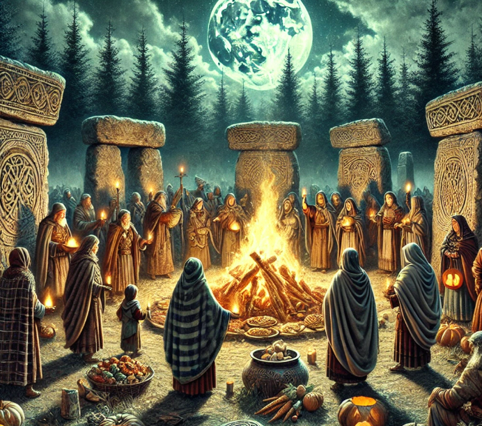
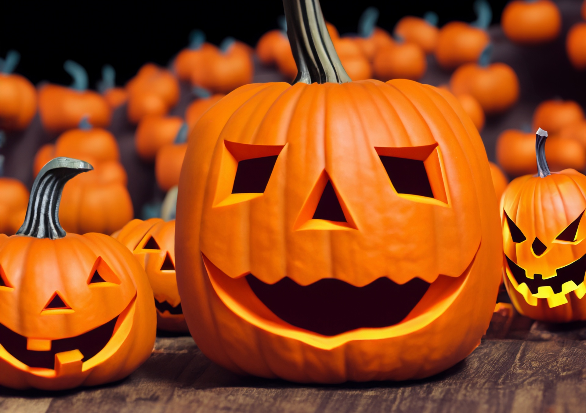

Ancient Roots: Samhain
Halloween's origins trace back roughly 2,000 years to the Celtic festival of Samhain, celebrated across what is now Ireland, the United Kingdom, and northern France. Samhain marked the end of the harvest season and the beginning of the dark winter half of the year — a transition the Celts associated with death. It was believed that on the night of October 31st, the boundary between the world of the living and the world of the dead grew thin, allowing spirits to pass through. To ward off wandering ghosts, people lit bonfires and wore costumes made of animal skins and heads, hoping to blend in or frighten spirits away.
Roman Influence
By the first century, the Roman Empire had conquered most Celtic territory, and Roman festivals gradually blended with Samhain traditions over the following centuries. Two Roman celebrations in particular left their mark: Feralia, a day in late October when Romans traditionally honored the dead, and a festival celebrating Pomona, the goddess of fruit and trees, whose symbol — the apple — may explain the origins of apple bobbing, a game still played at Halloween parties today.
All Hallows' Eve
In the 9th century, the Christian church designated November 1st as All Saints' Day (also called All Hallows), a time to honor saints and martyrs. The evening before became known as All Hallows' Eve, and over time the name shortened to "Halloween." Much like Samhain, All Saints' Day was celebrated with bonfires, parades, and costumes — people dressed as saints, angels, and demons. The two traditions layered on top of one another, and many of Samhain's older, pre-Christian customs survived by folding into the new holiday.
Halloween Comes to America
Early colonial New England had little tolerance for the holiday due to its rigid Protestant belief systems, but Halloween traditions were far more common in Maryland and the southern colonies. As beliefs and customs from different European ethnic groups and Indigenous peoples meshed, a distinctly American version of Halloween began to emerge — featuring "play parties," public events held to celebrate the harvest, where neighbors would share stories of the dead, tell each other's fortunes, dance, and sing.
The mass Irish immigration of the 1840s, driven in large part by the Irish Potato Famine, helped popularize Halloween nationally. Irish and Scottish immigrants carried their folk traditions with them, and by the early 20th century, Halloween had become a community-centered holiday celebrated by people of all backgrounds.
Trick-or-Treating
The custom of dressing in costume and going door-to-door for treats has roots in several older European practices, including "souling," where poor citizens would go door to door on All Hallows' Eve, receiving food in exchange for prayers for the dead, and "guising," where children would dress in costume and perform a small trick — a song, a poem, a joke — in exchange for food or coins. The modern phrase "trick or treat" only became widespread in North America in the 1930s and 40s, and the practice exploded in popularity after WWII sugar rationing ended, cementing Halloween as a holiday built around candy and costumes.

The Jack-o'-Lantern
The jack-o'-lantern comes from an old Irish folktale about a man named Stingy Jack, who tricked the Devil and was, as legend has it, ultimately barred from both Heaven and Hell. Doomed to wander the earth, he carried a single burning coal inside a hollowed-out turnip to light his way. The Irish began carving frightening faces into turnips and potatoes to scare Stingy Jack and other wandering spirits away from their homes. When Irish immigrants arrived in North America, they discovered that pumpkins — native to the continent and much easier to carve — made an even better lantern, and the tradition stuck.
Halloween Today
Today, Halloween is one of the most widely celebrated holidays in the world, blending its ancient harvest and spirit-world origins with costumes, candy, horror movies, haunted houses, and neighborhood trick-or-treating. Whatever its form, the core of the holiday has stayed remarkably consistent for two thousand years: a night to acknowledge the dark, dress up as something else entirely, and share it with the people around you.